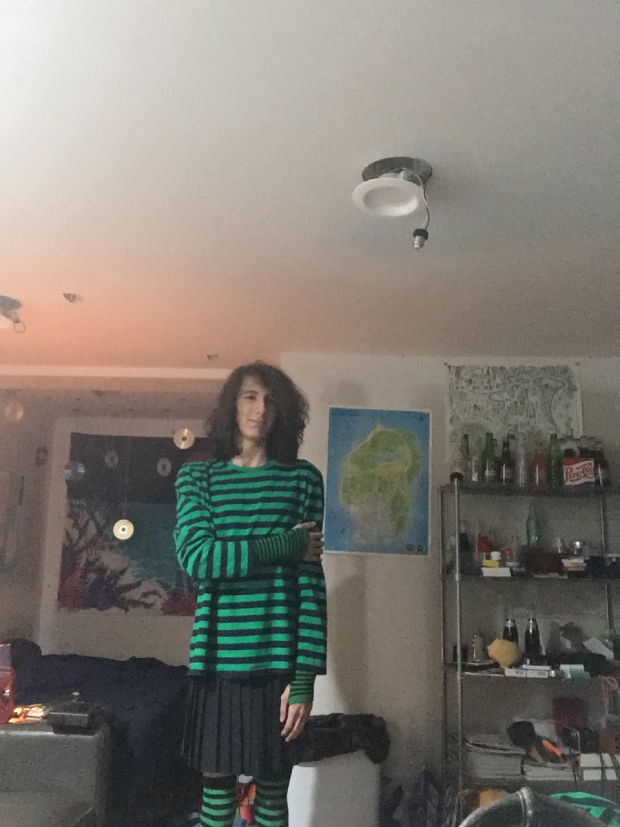

I was born in hampton virgina on october 26 2006
About half a year ago I watched this video where this guy showed off some weird art project that was a whole website after I Was done watching it I went to the website and checked all the links out and all the art after that I got recommended this video in my for you page I didint finish it but after a while, I got recommended another video in this one the person explained how to code in neocities I soon figured out that it was free and I learned how to experiment with HTML5 all on my own and now im here with my own website getting ready to go to college to be a programmer (*＾ω＾)人(＾ω＾*)
IM A FEMBOY or at least I want to be one I olny really have two outfits as of writing this but ive been dressing in skirts and stuff for a little while now I still have terrible acne and im also still very masculine looking so im still far from really being a true femboy but im getting there also I have cats the one on the right is remy shes pretty cute I dont have a lot hobbies I mostly like to program thats my main hobby right now im also really in to science in genral im a massive nerd and I actually love learning but Im not a fan of math just so you know also if you couldent tell already im gay thats all I have to say about that if I had to describe who I am as a person I would say that im very quite but at the same time I can be exsplosive and loud along with anoyying I dont have any friends but theres definitely pepole who know me and pepole who I call friends but I have no real life friends listening to music is the olny other thing I could consider being a hobby I actually have an ipod because I love music so much when it comes to tv the olny thing I really watch any more is adult swim as ive gotten older ive watched less and less tv so now I kind of just watch youtube sometimes I really miss cable tv I hate streaming a lot In case you were wondering about anime I dont really watch it the olny one I ever watched and actualy liked afterwards was Bstars its actually really cool if you can get over all the weird furry stuff
as of writting we have been dating for 7 months and we are still together there's no chance it's anyone else but im still diying to meet him IRL since he lives in malaysia some day he will live with me it's a serious relationship and im heavily invested in him
I live in the concord/charlotte area in the piedmont region of NC I do not plan on moving
nikfijman@gmail.com (you can say hi just dont be rude)
